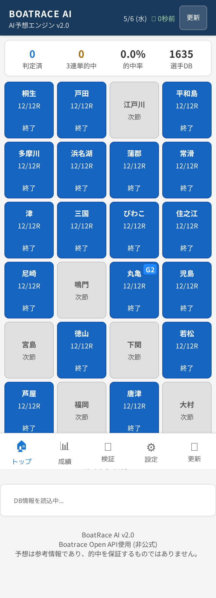
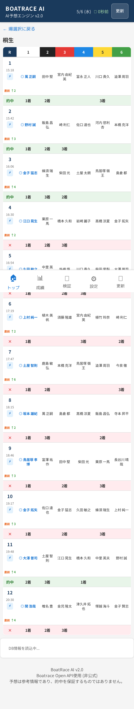
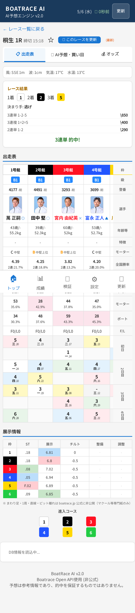
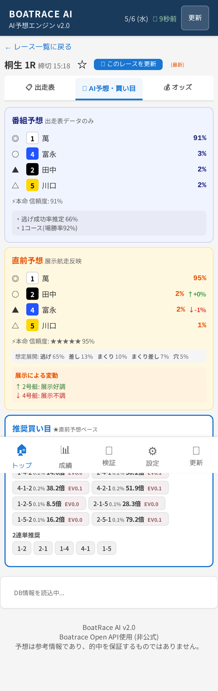
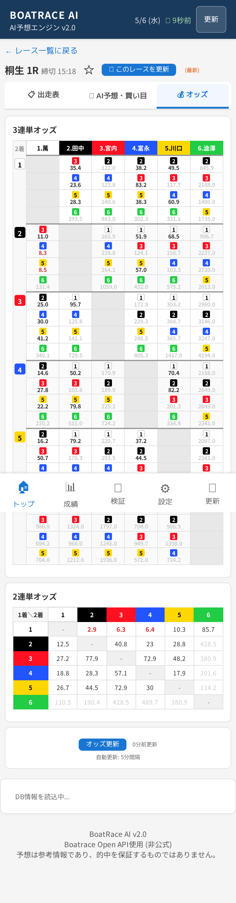
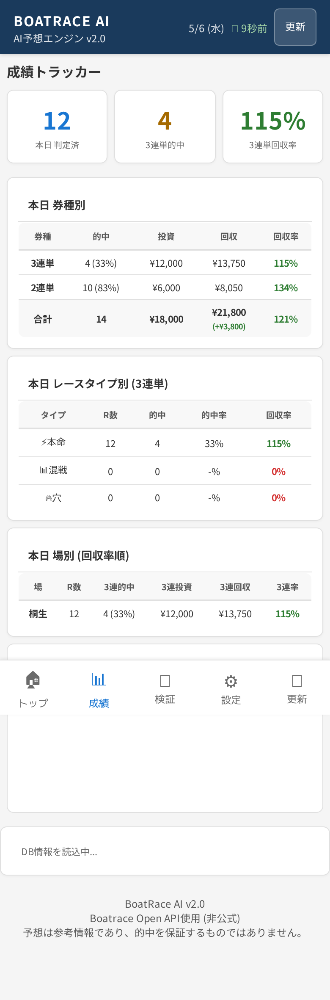
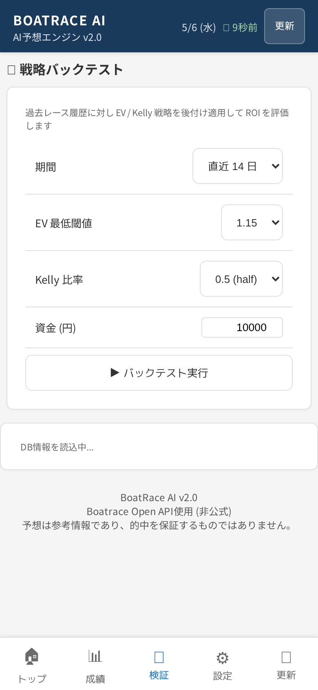
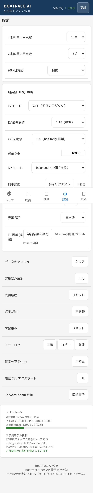
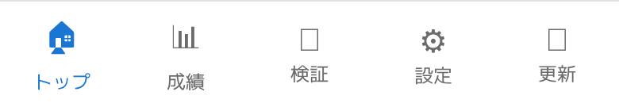

1. アプリ概要
BoatRace AI は競艇全24場・全12レースの出走情報・オッズ・直前情報を
Boatrace Open API から自動取得し、ルールベース＋ロジスティック回帰のハイブリッド
AIエンジンで 1着確率・買い目・期待値 (EV) を提案する PWA です。
主な機能
- 全24場のリアルタイム本日成績表示（終了 / 開催中 / 次節）
- 各レース: 出走表 6艇 + 番組予想 + 直前予想 + 推奨買い目 (3連単 / 2連単)
- レースタイプ自動判定: ⚡本命 / 📊混戦 / 🔥穴
- EV ベース買い目 (期待値≥1.15 のみ推奨) と Kelly 比率による資金配分
- 成績トラッカー: 日別 / 場別 / レースタイプ別の的中率と回収率
- 戦略バックテスト: 過去履歴に EV/Kelly 戦略を後付け適用して ROI 評価
- Federated Learning オプトイン（GitHub Issues 経由でモデル改善に貢献）
動作環境
- iPhone Safari (iOS 14+) / Android Chrome / PC Chrome / Edge / Firefox
- オフライン時は最後にキャッシュした内容が読めます (Service Worker)
- データは全て端末内 (localStorage / IndexedDB) に保存。サーバ送信なし
2. インストール (PWA)
iPhone (Safari)
- Safari でサイト URL を開く
- 下部の 共有ボタン (□↑) をタップ
- ホーム画面に追加 を選択 → 「追加」
- ホーム画面のアイコンから起動 (Safari UI なしのフルスクリーン)
Android (Chrome)
- Chrome でサイト URL を開く
- 右上の ⋮ メニュー → ホーム画面に追加
💡 PWA のメリット
オフラインで開ける / プッシュ通知 / アプリストア不要 / 自動更新
（新バージョン公開時に画面上部に通知が出ます）
3. トップ画面 — 開催場一覧

図 1: トップ画面 (開催場グリッド)
表示要素
- ヘッダー: 日付 / 鮮度 (○○秒前) / 更新 ボタン
- 本日成績サマリー: 判定済 / 3連単的中 / 的中率 / 選手DB件数
- 24場グリッド (2列×12行)
- 青 = 本日開催 (12/12R 終了 など)
- グレー = 次節 (本日休催)
- G2 等のグレード章典バッジ
- ボトムナビ: トップ / 成績 / 検証 / 設定 / 更新
操作
- 場をタップ → レース一覧画面 (§4) へ遷移
- 右上の 更新 で全データを再取得
4. レース一覧画面

図 2: 桐生 12レース表
表示要素
選択した場の全12レースを縦スクロール一覧で表示します。
- 1列目 (R): レース番号 / 締切時刻 / レースタイプアイコン / 番組 or 直前
- 2〜7列目 (1〜6艇): 各艇の選手名。AI が 1着候補とした艇には ◎ と太字
- 結果行 (終了レース): 的中 / × と着順 1着・2着・3着
レースタイプの見方
| アイコン | 意味 | 判定条件 (3連単) |
|---|
| ⚡本命 | 1号艇圧倒的 | 1着確率 > 40% かつ TOP2 合算 > 55% |
| 📊混戦 | 実力拮抗 | 本命にも穴にも該当しない場合 |
| 🔥穴 | 波乱含み | 1着確率 < 25% / 波高 7cm 以上 / 風速 5m 以上 |
操作
- レース行をタップ → レース詳細画面 (§5)
- 左上 ← 場選択に戻る でトップへ
5. レース詳細画面
詳細画面は 3つのタブ で切り替え可能です。
デフォルトは「📋 出走表」が表示されます。
5.1 出走表タブ 📋

図 3: 出走表タブ (桐生 1R)
表示要素 (上から順)
- レース基本情報: 締切時刻 / 風向風速 / 気温 / 水温 / 波高 / コース変動有無
- レース結果 (終了済): 1〜3着艇 / 3連単・2連単払戻金 / 的中表示
- 出走表テーブル (6艇横並び)
- 艇番カラー (1赤2青3黄4緑5橙6紫)
- 級別 (A1/A2/B1/B2)
- 選手名 (タップで選手成績へ展開)
- 体重 / 年齢 / 所属支部
- 全国勝率 / 当地勝率 / 2連対率 / 3連対率
- モーター 2連対率 / ボート 2連対率
- F (フライング) / L (出遅れ) 数
- 展示情報: 展示タイム / ST / コース取り (進入予想)
5.2 AI予想・買い目タブ 🧠

図 4: AI予想・買い目タブ
2段階の予想を併記
- 番組予想: 出走表データ (選手成績・モーター等) のみで予測。展示前から表示
- 直前予想: 展示走後の ST・展示タイム・スタート展示を加味して再計算
マーク表記
| 記号 | 意味 |
|---|
| ◎ | 本命 (1着候補) |
| ○ | 対抗 |
| ▲ | 単穴 |
| △ | 連下 |
推奨買い目
- 3連単: 設定された点数 (デフォルト10点) を確率順 or フォーメーション or BOX で出力
- 2連単: 設定された点数 (デフォルト 5点) を同様に出力
- 各買い目に EV (期待値) を表示 — オッズ × 確率
- EV ≥ 1.15 = 推奨ライン
- EV ≥ 1.20 = 高 EV (オレンジバッジ)
- Kelly 比率に基づく 推奨投資額 も併記 (設定で調整可)
5.3 オッズタブ 💰

図 5: オッズタブ (3連単 + 2連単)
3連単オッズマトリクス
- 1着艇 × 2着艇 × 3着艇 のクロステーブル
- セル色: 推奨買い目に含まれるオッズはハイライト
- セル内: オッズ値 / 想定支持率(%)
2連単オッズ表
- 1着艇 × 2着艇 (6×6 グリッド)
- セル色は 3連単と同じハイライト規則
更新
- オッズ更新 ボタンで最新値に再取得 (約30分間隔で自動更新済)
- 古いデータの場合は「□分前」と鮮度表示
⚠ オッズの注意
Boatrace Open API は非公式かつ約30分間隔の更新です。
締切直前のリアルタイム値ではないため、購入前に必ず公式テレボートでも確認してください。
6. 成績トラッカー

図 6: 成績トラッカー
本日サマリー (3 KPI)
- 本日 判定済: 結果が確定したレース数
- 3連単 的中: 推奨買い目が的中したレース数
- 3連単 回収率: (払戻 ÷ 投資) ×100% — 100% で損益分岐
本日 券種別
3連単 / 2連単別の的中数・投資・回収・回収率を表で表示
本日 レースタイプ別
⚡本命 / 📊混戦 / 🔥穴 別の的中率・回収率 — 自分の戦略の偏りが見える
本日 場別 (回収率順)
場ごとの的中率・回収率。回収率の高い場が一目で分かる
過去履歴
下にスクロールすると 日別グラフ (Chart.js) と 履歴テーブル が表示されます (60日保持)
7. 戦略バックテスト

図 7: 戦略バックテスト
過去のレース履歴に対して EV/Kelly 戦略を後付け適用し、
設定変更が ROI にどう効くかを評価できます。
パラメータ
| 項目 | 説明 |
|---|
| 期間 | 直近7日 / 14日 / 30日 / 全履歴 から選択 |
| EV 最低閾値 | 1.05 / 1.10 / 1.15 (推奨) / 1.20 / 1.25 — 厳しいほど少点・的中率高め |
| Kelly 比率 | 0.25 (quarter) / 0.5 (half 推奨) / 1.0 (full) — 高いほどリスク高 |
| 資金 (円) | 初期資金。Kelly 比率の計算ベース |
出力
- 総投資額 / 総回収額 / 純損益 / ROI%
- レースタイプ別 / 場別の内訳
- 資金推移グラフ
💡 使い方の例
EV 閾値を 1.10 → 1.20 に変えてみて回収率がどう変わるか比較。
自分の目に合う閾値を見つけたら設定画面の「EV 最低閾値」に同じ値を入れると本番にも反映されます。
8. 設定画面

図 8: 設定画面
買い目設定
| 項目 | 選択肢 | 初期値 |
|---|
| 3連単 買い目点数 | 3 / 5 / 10 / 15 / 20 点 | 10 点 |
| 2連単 買い目点数 | 2 / 3 / 5 / 8 点 | 5 点 |
| 買い目方式 | 自動 / 確率順 / フォーメーション / BOX | 自動 |
期待値 (EV) 戦略
| 項目 | 選択肢 | 説明 |
|---|
| EV モード | OFF / EV 優先 / 厳格 | 従来ロジックか EV ベースか |
| EV 最低閾値 | 1.05〜1.25 | これ未満の買い目は除外 |
| Kelly 比率 | 0.25 / 0.5 / 1.0 | 0.5 (half-Kelly) 推奨 |
| 資金 (円) | 任意整数 | Kelly 計算用 |
| KPI モード | balanced / aggressive / conservative | 判定ロジックの保守度 |
表示・通知
- 的中通知: 許可リクエスト / 拒否
- 表示言語: 日本語 / English / 简体中文
FL 貢献 (実験)
「学習結果を共有」を ON にすると DP noise を加えた重み更新を GitHub Issue に匿名 post し、
コミュニティモデル改善に貢献。OFF が初期値。
データ管理
| ボタン | 動作 |
|---|
| データキャッシュ クリア | API レスポンスキャッシュのみ削除 |
| 容量緊急解放 | localStorage 5MB 接近時の緊急 trim |
| 成績履歴 リセット | boatrace_history を全削除 (二段確認) |
| 選手/場DB 再構築 | racerDB / stadiumDB / pairwiseDB を削除して再取得 |
| 学習重み リセット | L2 重みを初期値に戻す |
| エラーログ | 表示 / コピー / 削除 |
| 確率校正 (Platt) 再校正 | 履歴 200件以上で適用可能 |
| 履歴 CSV エクスポート | 分析用 CSV ダウンロード |
| Forward-chain 評価 | logloss / Brier / ECE を即時計算 |
ストレージ表示
選手DB件数 / 場DB件数 / 予想履歴件数 / localStorage 使用量 などを下部に常時表示
9. ボトムナビ

図 9: ボトムナビゲーション (5項目)
| アイコン | 名称 | 機能 |
|---|
| 🏠 | トップ | 開催場一覧 (§3) へ戻る |
| 📊 | 成績 | 成績トラッカー (§6) を表示 |
| 🧪 | 検証 | 戦略バックテスト (§7) を表示 |
| ⚙️ | 設定 | 設定画面 (§8) を表示 |
| 🔄 | 更新 | 全データを強制再取得 (programs / previews / odds / results) |
10. 使いこなし Tips
10.1 推奨ワークフロー (1日の流れ)
- 朝: アプリ起動 → トップで本日開催場を確認
- レース選び: ⚡本命 中心に絞る (回収率が安定)
- 展示前: 「番組予想」をチェック、買い目とオッズ確認
- 展示後 (締切 5〜10分前): 「直前予想」に切替えて買い目変更を検討
- レース後: 結果は自動取得 → 成績トラッカーで日次回収率を確認
10.2 EV 重視 vs 確率重視
- EV 重視 (推奨): EV 最低閾値 1.15 以上のみ買う。買い目は少なくなるが期待値プラス
- 確率重視: EV モード OFF。本命党向け。的中率は高いが回収率は売れすぎでマイナスになりやすい
10.3 自分の戦略に合うパラメータの探し方
- 検証ページ (§7) で過去14日に対し EV 閾値を変えて ROI を計算
- ROI が最大化される閾値を見つけたら設定 (§8) に反映
- 1〜2週間運用して成績ページ (§6) で実際の回収率を確認
10.4 学習を進める
「予想履歴」が 200 件以上溜まると Platt scaling 確率校正 が
自動で再校正可能になります (設定画面)。校正により AI の確率推定がより
実測に近づきます。
10.5 ホーム画面ショートカット (PWA)
PWA インストール後、ホーム画面アイコンを長押し (iOS/Android) すると
成績 と 検証 へのショートカットが出ます。
11. 免責事項・注意事項
⚠ 重要な免責
本アプリの予想は 参考情報 であり、的中を保証するものではありません。
公営競技は20歳以上の方のみが楽しめる娯楽です。投資は自己責任で、
生活に支障をきたさない範囲で行ってください。
データソースについて
- 本アプリは Boatrace Open API (非公式・GitHub Pages 配信) からデータを取得しています
- 更新間隔は約30分。締切直前のリアルタイムオッズではありません
- API 障害時はキャッシュ表示またはエラーメッセージが出ます
- 購入前は必ず 公式テレボート で最新値を確認してください
プライバシーについて
- 予想履歴・選手DB等は 全て端末内 (localStorage / IndexedDB) に保存
- 個人情報・購入履歴・現金情報は一切収集しません
- FL 貢献を ON にした場合のみ、差分プライバシ加工した モデル重み更新のみが GitHub Issue 経由で送信されます (匿名)
サポート / フィードバック
- 不具合報告: GitHub Issues (リポジトリ
inotaka1979/boatrace-ai)
- エラーログ: 設定画面の「エラーログ → コピー」で診断情報を取得可能